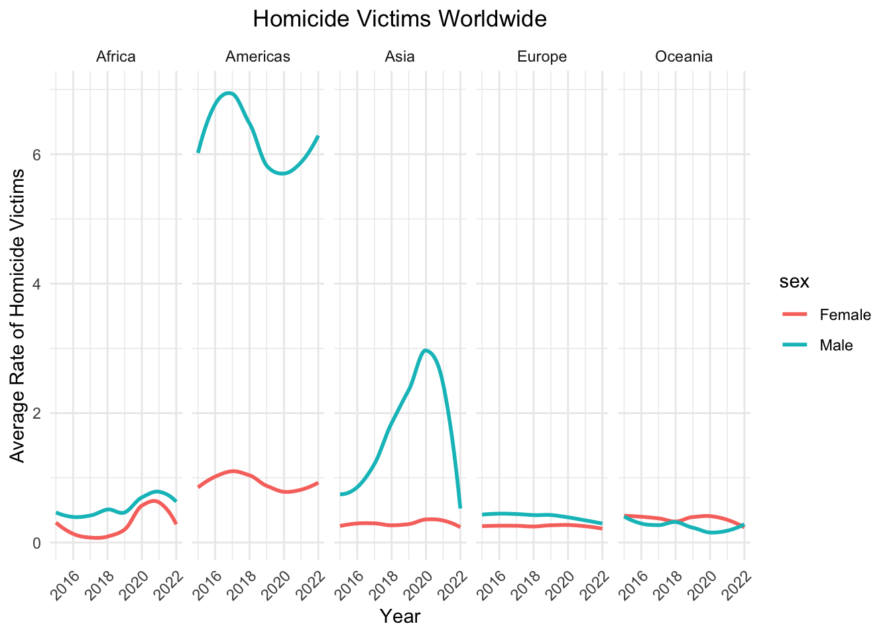
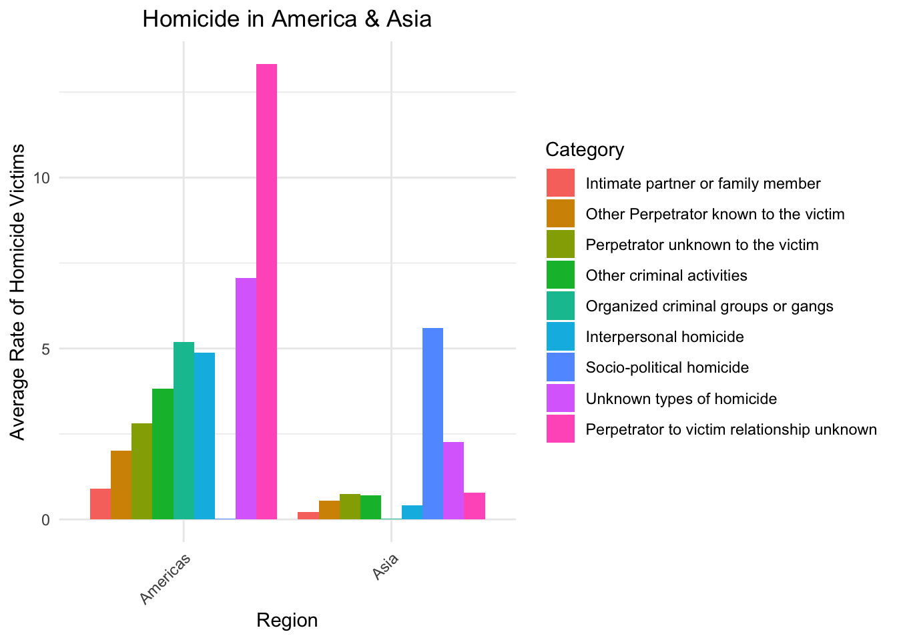
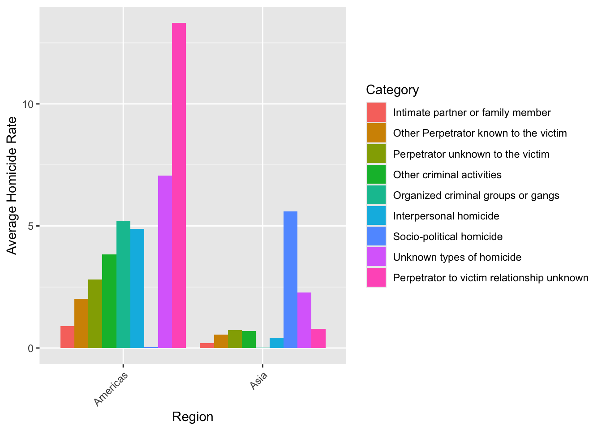
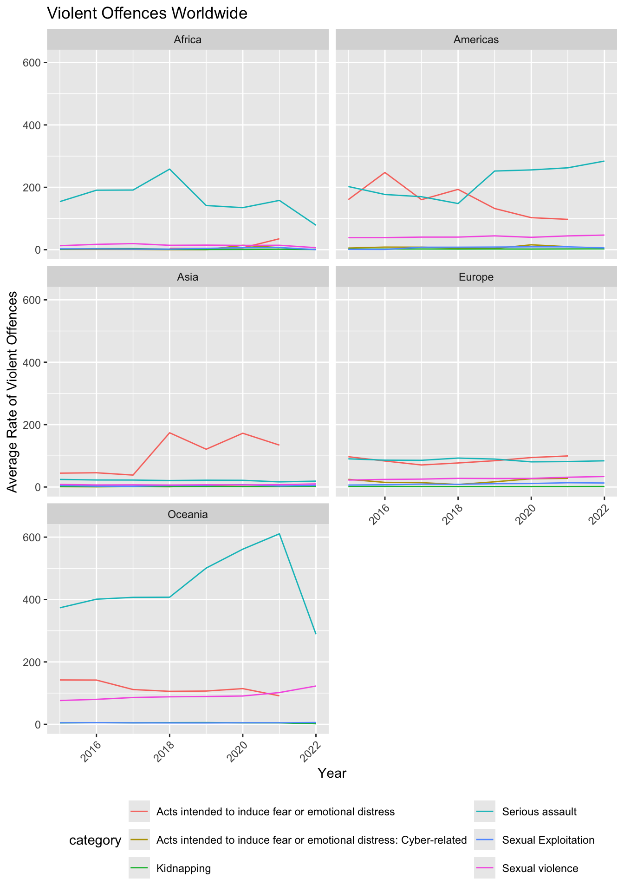
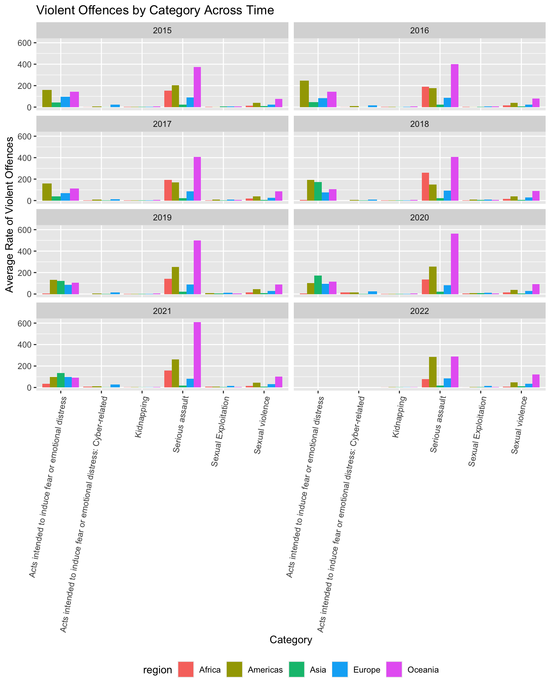
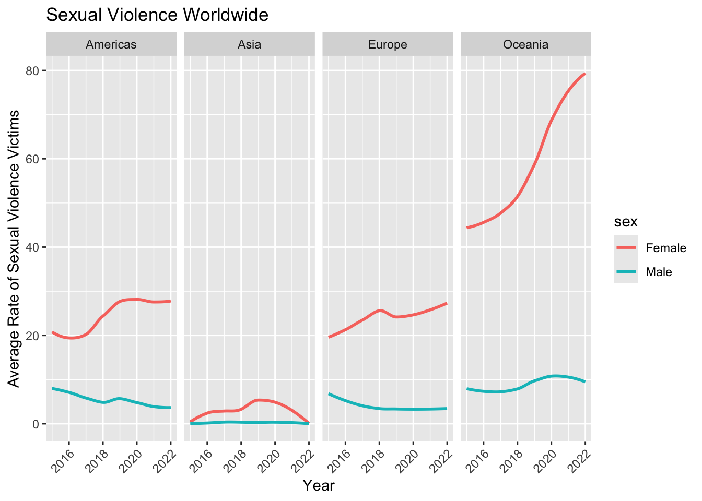
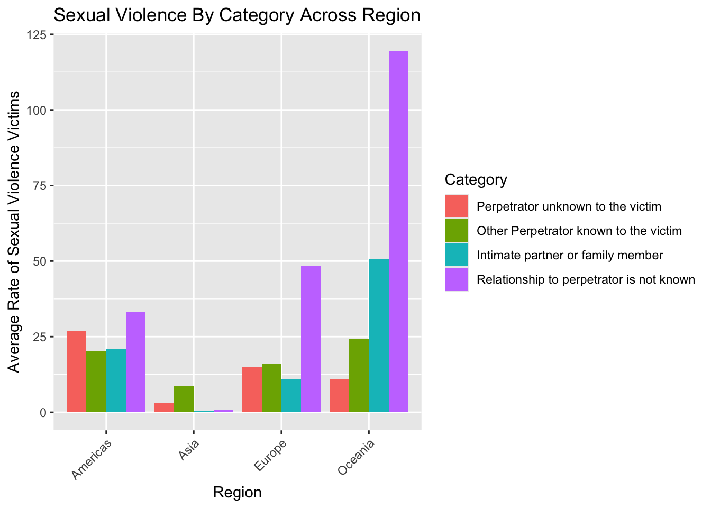
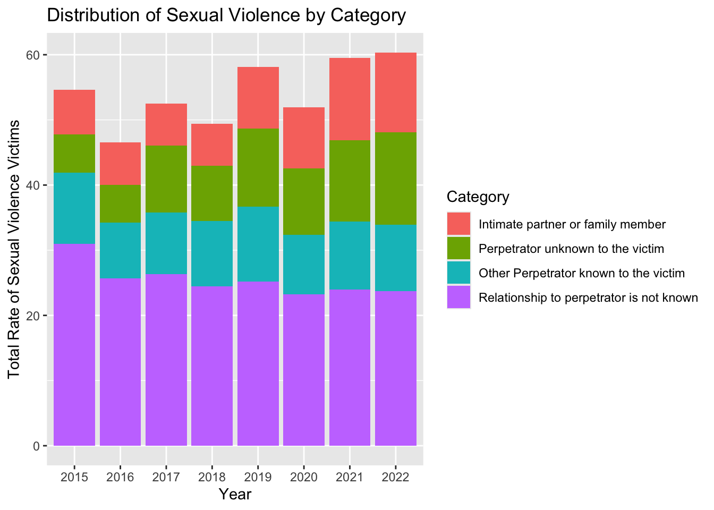

Globally, violence undermines social and economic development, with its impacts being more pronounced in “developing” countries. Communities lacking adequate resources or experiencing systemic inequities are more vulnerable to various health challenges, including violence. Factors that influence health also play a role in shaping violence, which in turn affects determinants such as housing, education, transportation, and economic conditions. This project seeks to explore the factors driving serious assault, sexual violence, and intentional homicide worldwide from 2015 to 2023.
Selected this time frame because it includes significant global events, including the COVID-19 pandemic and various conflicts, which have greatly influenced patterns of violence. Also, even though there are a lot of missing data for year 2023, we decided to include the year because this time period provides insight into the contemporary factors shaping violence worldwide.
Since there are many determinants and indicators of violence, we chose the indicators and outcomes that seem most relevant and interesting in exploring violence from the following sources:
Intentional homicide, and violent and sexual crimes were chosen as the outcome variable to quantify violence.
The datasets were downloaded from the official websites of the sources above. The names of the files were also changed accordingly for clarity and to avoid confusion. For example, the alcohol consumption data file was renamed from “data.csv” to “alcohol_consumption.csv”.
For EDA, since we are interested in exploring the trends of global violence, we imported and tidied the datasets for our two outcome variables: homicide and violence.
homicide_visual_df =
read_excel(path = "data/unodc/intentional_homicide.xlsx",
skip = 2) |>
janitor::clean_names() |>
filter(unit_of_measurement == "Rate per 100,000 population",
indicator == "Victims of intentional homicide",
category != "Total",
sex != "Total",
between(year, 2015, 2023)) |>
select(country, region, category, sex, year,
homicide_rate = value) |>
mutate(category = str_replace_all(category,
"^Intimate partner or family member.*",
"Intimate partner or family member"),
category = str_replace_all(category,
"^Socio-political homicide.*",
"Socio-political homicide"))The tidied homicide dataset includes country, region, category of homicide victims, sex, year and victim rate of homicide. The dataset included data for both counts and rates per 100,000 people. Therefore, we filtered to choose rates per 100,000 people since it allows standardization for comparability by adjusting for differences in population size.
violence_visual_df =
read_excel(path = "data/unodc/violent_sexual_crime.xlsx",
skip = 2) |>
janitor::clean_names() |>
filter(unit_of_measurement == "Rate per 100,000 population",
between(year, 2015, 2023)) |>
select(country, region, indicator, category, sex, year,
violence_rate = value) |>
mutate(category = str_replace_all(category,
"^Sexual violence.*",
"Sexual violence"))The tidied violence dataset includes country, region, indicator, category of violence, sex, year and violence rate. The indicator includes different rates for violence (violent offences and victims) which will be explored further in EDA. Rates per 100,000 people were chosen also for this dataset for comparability.
For regression, the datasets for all the chosen predictors and outcomes will be tidied and merged for modeling process and analysis.
tidy_df = function(data, variable, pivot = FALSE, average = FALSE) {
if(pivot) {
data = data |>
pivot_longer(cols = -iso3_code,
names_to = "year",
values_to = variable) |>
janitor::clean_names()
}
data = data |>
mutate(year = as.numeric(year),
iso3_code = str_replace_all(iso3_code, "^GBR.*", "GBR"),
iso3_code = str_replace_all(iso3_code, "^IRQ.*", "IRQ"),
country = countrycode(iso3_code, origin = "iso3c",
destination = "country.name",
nomatch = NA, warn = FALSE)) |>
drop_na(country)
if(average) {
if("region" %in% colnames(data)) {
data = data |>
group_by( country, region, year) |>
summarize(!!variable := mean(value))
}
else {
data = data |>
group_by(country, year) |>
summarize(!!variable := mean(value))
}
}
return(data)
}We defined a function tidy_df()to pipe after importing
each dataset to automatically tidy the datasets. The
countrycode() function standardizes the country names of
each dataset since some of the country names are represented
inconsistently across dataset files. For example, South Korea was
represented as “Korea (Republic of)” and “Korea, Rep.”
Moreover, for the countrycode() function, NA is returned if no
matches are found and warnings are also suppressed by
nomatch = NA and warn = FALSE respectively
since some datasets include iso3 codes for entities that are not
countries. For example, EUU represents the European Union; however, the
countrycode() function only recognizes iso3 codes for
countries and returns a warning, but we are interested in countries and
regions. A boolean parameter called pivot was included to
indicate if a dataset needs to be pivoted and subsequently perform
pivot_longer(), since some datasets had years organized as
different columns, where each column represented values for that
year.
Also, some of the datasets include rates for different categories.
For example, the data for economic crime includes crime rates for fraud,
burglary and more. Therefore, another boolean parameter called
average was included to pass an option to group by and
summarize rates across categories and genders of different datasets, in
order to provide a standardized measure and reduce complexity for
analysis.
gdp_df =
read_excel(path = "data/worldbank/gdp.xls",
sheet = "Data", skip = 3, na = "") |>
select(iso3_code = 2, "2015":"2023") |>
tidy_df("gdp", pivot = TRUE)
inflation_df =
read_excel(path = "data/worldbank/inflation_rate.xls",
sheet = "Data", skip = 3, na = "") |>
select(iso3_code = 2, "2015":"2023") |>
tidy_df("inflation_rate", pivot = TRUE)
unemployment_df =
read_excel(path = "data/worldbank/unemployment_rate.xlsx",
range = "A1:BP437", na = "..") |>
rename_with(str_replace_all, pattern = " \\[.*", replacement = "") |>
select(iso3_code = 4, "2013":"2023") |>
tidy_df("unemployment_rate", pivot = TRUE)
human_develop_df =
read_csv(file = "data/undp/human_development_index.csv", na = "") |>
head(-11) |>
rename_with(str_replace_all, pattern = "hdi_", replacement = "") |>
select(iso3_code = 1, "2015":"2022") |>
tidy_df("hdi", pivot = TRUE)The following variables were identified as economic prdictors of violence:
gdpinflationunemploymenthuman development indexThe pivot parameter of the tidy_df()
function was set to true for these datasets, since all of them had the
different years as data columns, which needs to be pivoted
accordingly.
homicide_df =
read_excel(path = "data/unodc/intentional_homicide.xlsx", skip = 2) |>
janitor::clean_names() |>
filter(indicator == "Victims of intentional homicide",
unit_of_measurement == "Rate per 100,000 population",
dimension == "Total",
sex == "Total",
age == "Total") |>
tidy_df("homicide_rate", average = TRUE)
violence_df =
read_excel(path = "data/unodc/violent_sexual_crime.xlsx", skip = 2) |>
janitor::clean_names() |>
filter(indicator == "Violent offences",
unit_of_measurement == "Rate per 100,000 population") |>
tidy_df("violence_rate", average = TRUE)Unlike the tidied dataset for EDA, the datasets for homicide and violence had their respective rates averaged across category, since we are interested in the average rates of homicide victims and violent offences for regression analysis.
merged_violence_df =
left_join(homicide_df, violence_df) |>
left_join(gdp_df) |>
left_join(inflation_df) |>
left_join(unemployment_df) |>
left_join(human_develop_df) |>
left_join(econ_crime_df) |>
left_join(personnel_df) |>
left_join(trafficking_df) |>
left_join(alcohol_df) |>
mutate(country = as.factor(country),
region = as.factor(region)) |>
filter(between(year, 2015, 2023)) |>
relocate(iso3_code) |>
drop_na(violence_rate, homicide_rate)
head(merged_violence_df)## # A tibble: 6 × 14
## # Groups: country, region [1]
## iso3_code country region year homicide_rate violence_rate gdp
## <chr> <fct> <fct> <dbl> <dbl> <dbl> <dbl>
## 1 ALB Albania Europe 2015 2.22 5.51 11386853113.
## 2 ALB Albania Europe 2016 2.74 4.87 11861199831.
## 3 ALB Albania Europe 2017 2.01 4.64 13019726212.
## 4 ALB Albania Europe 2018 2.29 4.54 15156424015.
## 5 ALB Albania Europe 2019 2.26 5.09 15401826127.
## 6 ALB Albania Europe 2020 2.13 4.71 15162734205.
## # ℹ 7 more variables: inflation_rate <dbl>, unemployment_rate <dbl>, hdi <dbl>,
## # crime_rate <dbl>, personnel_rate <dbl>, trafficked_victims <dbl>,
## # alcohol_consumption_rate <dbl>write.csv(merged_violence_df, file = "./data/merged_violence.csv")The final merged dataset includes 771 rows and 14 columns, including iso3 codes, country, region, year, homicide rate, average violence offence rate, gdp, inflation rate, unemployment rate, average crime rate, criminal justice personnel rate, total, human trafficking rate and alcohol consumption rate as variables. There is a total of 127 distinct countries.
After merging the datasets, country and region were converted to
categorical variables and the dataset was filtered for the years between
2015 and 2023, the period of our interest for analysis. Although the
datasets were merged with matching country names tidied by the
countrycode(), the iso3 codes were retained, since they are
required for plotting maps which can be found under the shiny section of
this website.
homicide_visual_df |>
group_by(region, sex, year) |>
summarize(avg_homicide_rate = mean(homicide_rate)) |>
ggplot(aes(y = avg_homicide_rate, x = year, color = sex)) +
geom_smooth(se = FALSE) +
facet_grid(~region) +
theme(axis.text.x = element_text(angle = 45, hjust = 1)) +
labs(x = "Year",
y = "Average Rate of Homicide Victims",
title = "Homicide Victims Worldwide")
The Americas and Asia have significantly higher average homicide rate across years for male victims compared to the other regions. The average homicide rate between genders are not significant for Africa, Asia and Oceania.
homicide_visual_df |>
filter(region %in% c("Asia", "Americas")) |>
group_by(category, region) |>
summarize(avg_homicide_rate = mean(homicide_rate)) |>
ggplot(aes(y = avg_homicide_rate, x = region,
fill = reorder(category, avg_homicide_rate))) +
geom_col(position = "dodge", bin = 3.0) +
theme(axis.text.x = element_text(angle = 45, hjust = 1)) +
labs(x = "Region",
y = "Average Rate of Homicide Victims",
title = "Homicide in America & Asia",
fill = "Category")
Further exploring homicide in Americas and Asia, the Americas have higher homicide rates for most categories compared to Asia. Homicides of perpetrator to victim relationship unknown has the largest homicide rate. Homicides of unknown types is next category with the highest homicide rate in the Americas.
On the other hand, Asia has a significantly high homicide rate in socio-political homicide compared to the other categories,suggesting high casualties as a result of socio-political activities for countries in Asia. The other categories have a homicide rate lesser than 5 percent.
homicide_visual_df |>
group_by(category, year) |>
summarize(avg_homicide_rate = mean(homicide_rate)) |>
ggplot(aes(y = avg_homicide_rate, x = as.factor(year), fill =
reorder(category, avg_homicide_rate))) +
geom_bar(stat = "identity") +
labs(title = "Distribution of Homicide by Category",
x = "Year",
y = "Total Rate of Homicide Victims",
fill = "Category")
Homicides of unknown types and perpetrator to victim relationship unknown are two highest proportions in the total homicide rate, indicating most homicides are committed by strangers or have no connection with the victims. Also, we can observe that homicide rates as a result of organized criminal groups or gangs and interpersonal homicide are the next significant proportions in homicide. The total homicide rate increases sharply from 2015 to 2017 compared to the other years possibly due to socioeconomic factors, such as economic instability.
violence_visual_df |>
filter(indicator == "Violent offences") |>
group_by(category, year, region) |>
summarise(grp_mean_rate = mean(violence_rate)) |>
ggplot(aes(x = year, y = grp_mean_rate, color = category)) +
geom_line() +
facet_wrap(~region, ncol=2) +
theme(axis.text.x = element_text(angle = 45, hjust = 1),
legend.position = "bottom") +
labs(title = "Violent Offences Worldwide",
x = "Year",
y = "Average Rate of Violent Offences") +
guides(color = guide_legend(nrow = 3))
Africa’s most common violent offence category was serious assault, with the Americas trading off between serious assault and acts intended to induce fear or emotional distress. From 2015-2021 Oceania clearly has the highest rates of serious assault, but it drops severely in 2022.
violence_visual_df |>
filter(indicator == "Violent offences") |>
group_by(category, year, region) |>
summarise(avg_violence_rate = mean(violence_rate)) |>
mutate(category = fct_reorder(category, avg_violence_rate)) |>
ggplot(aes(x = category, y = avg_violence_rate, fill = region)) +
geom_bar(stat = "identity", position = "dodge") +
facet_wrap(~year, ncol=2) +
theme(axis.text.x = element_text(angle = 80, hjust = 1),
legend.position = "bottom") +
labs(x = "Category",
y = "Average Rate of Violent Offences",
title = "Violent Offences by Category Across Time") 
The plot above shows similar trends to the line graph above, but allows us to compare more closely the rates for categories that are less visible such as sexual violence, where Oceania appears to have the highest rates of as well. We see more clearly that with Oceania’s drop in serious assaults in 2022, Americas and Oceania have similar trends.
Even in 2024, it is still ever-important to discuss sexual violence crimes. Violence against women is a public health issue and any type of sexual violence is a violation of human rights, harming physical, mental, sexual, and reproductive health. We are interested in seeing more specifically trends in sexual violence across the years for regions with sufficient data.
violence_visual_df |>
filter(indicator == "Victims of sexual violence",
region != "Africa") |>
group_by(region, sex, year) |>
summarize(avg_victim_rate = mean(violence_rate)) |>
ggplot(aes(y = avg_victim_rate, x = year, color = sex)) +
geom_smooth(se = FALSE) +
facet_grid(~region) +
theme(axis.text.x = element_text(angle = 45, hjust = 1)) +
labs(x = "Year",
y = "Average Rate of Sexual Violence Victims",
title = "Sexual Violence Worldwide")
When exploring victim rate of sexual violence, we can see that in overall, there is a higher average victim rate for females; the largest disparity in victim rate between the genders can be observed in Oceania, where the rate for females have been sharply increasing over the years. The victim rate for the Americas and Europe has also been increasing, but steadily compared to Oceania over the years, while Asia has experienced a decline from 2019. Africa was not included because the data was either very small or missing for many countries in the region.
violence_visual_df |>
filter(indicator == "Victims of sexual violence",
region != "Africa") |>
group_by(category, sex, region) |>
summarize(avg_victim_rate = mean(violence_rate)) |>
ggplot(aes(y = avg_victim_rate, x = region,
fill = reorder(category, avg_victim_rate))) +
geom_col(position = "dodge") +
theme(axis.text.x = element_text(angle = 45, hjust = 1)) +
labs(x = "Region",
y = "Average Rate of Sexual Violence Victims",
fill = "Category",
title = "Sexual Violence By Category Across Region")
Further exploring victims of sexual violence, except for perpetrator unknown to the victim, Oceania has a higher average victim rate of sexual violence for the all other categories compared to the other regions. Oceania, Europe and Americas have relationship of perpetrator is not known as the highest category for victim rate. Similar to homicide, the perpetrators are strangers or have no connection with the victims for most sexual violence. On the other hand, Asia has a significantly low average victim rate, having other perpetrator known to the victim as the category with the highest rate.
violence_visual_df |>
filter(indicator == "Victims of sexual violence",
region != "Africa") |>
group_by(category, year) |>
summarize(avg_victim_rate = mean(violence_rate)) |>
ggplot(aes(y = avg_victim_rate, x = as.factor(year),
fill = reorder(category, avg_victim_rate))) +
geom_bar(stat = "identity") +
labs(x = "Year",
y = "Total Rate of Sexual Violence Victims",
title = "Distribution of Sexual Violence by Category",
fill = "Category")
Relationship to perpetrator is not known is the category with a significant proportion to total victim rate of sexual violence compared to the other categories across the years. The proportion of victim rates for the other three categories become approximately equal to each other from 2019. Specifically, the proportion for intimate partner or family member and perpetrator unknown to the victim increases over time.
Across the time period from 2015 to 2023, the Americas consistently exhibited a significantly higher homicide rate compared to other regions. The difference in this region is pronounced, indicating a persistent and widespread issue with violent crime. The homicide rate in Asia is also notable. There was a rising trend in homicide rate from 2015 to 2021, but was followed by a sharp decrease in 2022. However, it should be noted that not all countries that reported homicide rate also reported the violence rate.
The drop in 2022 may imply that there was a potential shift or improvement in the region, but it could also mean that there are some missing data in that year, leading a bias or misinterpretation. When examining violence rates, the Americas followed a similar trend to the homicide rate, with rates significantly higher than the other regions. This trend reflects the persistent issue of violence in the region, affecting not only homicide rates but also broader forms of violence. However, Oceania presented an extreme outlier in terms of victim rates of sexual violence, surpassing even the Americas.
Putting these results against our own knowledge, Oceania’s rates seem higher than expected. This raises the question of if higher rates mean more violent countries or countries who just have reported more crimes. It is very important to address that these outcome data are compiled by UNODC but the data itself comes from each nation’s respective administrative registers, often managed by law enforcement agencies. Additionally, UNODC comes by this data not through requirement but by the United Nations Survey of Crime Trends and Operations of Criminal Justice Systems (UN-CTS). This means that countries voluntarily supply their information. However, a safety-guard is that UNODC does check for consistency and coherence with other data sources.
(NEED TO ADD REGRESSION)
Social Determinants
The following variables were identified as social prdictors of violence:
economic crimecriminal justice personnelhuman traffickingalcoholThe datasets for economic crimes and criminal justice personnel also provided data for both counts and rates per 100,000 people. Subsequently, we filtered to choose rates per 100,000 people for standardization and comparability. The human trafficking dataset provided data for number of human trafficking victims, instead of trafficking rates; the dataset also included a category for total number of trafficking victims, so the data was filtered for total category and neither the
pivotnoraverageoptions were set to true in thetidy_df()function.